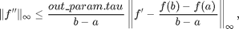
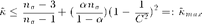

funappxab_g
One dimensional guaranteed function recovery on the interval [a,b].
Contents
Syntax
fappx = funappxab_g(f)
fappx = funappxab_g(f,a,b,abstol,nlo,nhi,nmax)
fappx = funappxab_g(f,'a',a,'b',b,'abstol',abstol,'nlo',nlo,'nhi',nhi,'nmax',nmax)
fappx = funappxab_g(f,in_param)
[fappx, out_param] = funappxab_g(f,...)
Description
fappx = funappxab_g(f) recovers function f on the default interval [0,1] by a piecewise linear interpolant fappx to within a guaranteed absolute error of 1e-6. Default initial number of points is 52 and default cost budget is 1e7. Input f is a function handle. The statement Y=f(X) should accept a vector argument X and return a vector Y of function values that is the same size as X.
fappx = funappxab_g(f,abstol,ninit,nmax) for given function f and the ordered input parameters with the interval a, b, guaranteed absolute error abstol, lower bound of initial number of points nlo, higher bound of initial number of points nhi and cost budget nmax.
fappx = funappxab_g(f,'abstol',abstol,'ninit',ninit,'nmax',nmax) recovers function f with the interval a, b, guaranteed absolute error abstol, lower bound of initial number of points nlo, higher bound of initial number of points nhi and cost budget nmax. All six field-value pairs are optional and can be supplied in different order.
fappx = funappxab_g(f,in_param) recovers function f with the interval in_param.a, in_param.b, guaranteed absolute error in_param.abstol, lower bound of initial number of points in_param.nlo, higher bound of initial number of points in_param.nhi and cost budget in_param.nmax. If a field is not specified, the default value is used.
[fappx, out_param] = funappxab_g(f,...) returns an approximated function fappx and an output structure out_param.
Input Arguments
- f --- function handle
- in_param.a --- left end point of interval, default value is 0
- in_param.b --- right end point of interval, default value is 1
- in_param.abstol --- guaranteed absolute error, default value is 1e-6
- in_param.nlo --- lower bound of initial number of points we used, default value is 52
- in_param.nhi --- higher bound of initial number of points we used, default value is 52
- in_param.nmax --- cost budget, default value is 1e7
Output Arguments
- out_param.nmax --- cost budget
- out_param.exceedbudget --- it is 0 if the number of points used in the construction of fappx is less than cost budget, 1 otherwise.
- out_param.ninit --- initial number of points we used
- out_param.npoints --- number of points we need to reach the guaranteed absolute error
- out_param.errorbound --- estimation of the approximation absolute error bound
- out_param.tau --- latest value of tau
- out_param.a --- left end point of interval
- out_param.b --- right end point of interval
- out_param.abstol --- guaranteed absolute error
- out_param.nlo --- lower bound of initial number of points we used, default value is 52
- out_param.nhi --- higher bound of initial number of points we used, default value is 52
Guarantee
If function f satisfied condition

then we can have the guaranteed result
when the flag out_param.exceedbudget = 0.

Examples
Example 1
f = @(x) x.^2; [fappx, out_param] = funappxab_g(f) % Approximate function x^2 with default input parameter to make the error % less than 1e-6.
fappx =
@(x)interp1(x1,y1,x,'linear')
out_param =
a: 0
b: 1
abstol: 1.0000e-06
nlo: 52
nhi: 52
nmax: 10000000
ninit: 52
tau: 101
exceedbudget: 0
npoints: 7039
errorbound: 5.0471e-09
Example 2
[fappx, out_param] = funappxab_g(@(x) x.^2,0,100,1e-7,52,52,1e8) % Approximate function x^2 on [0,100] with error tolerence 1e-7, cost % budget 10000000 and initial number of points 52
fappx =
@(x)interp1(x1,y1,x,'linear')
out_param =
a: 0
abstol: 1.0000e-07
b: 100
f: @(x)x.^2
nhi: 52
nlo: 52
nmax: 100000000
ninit: 52
tau: 101
exceedbudget: 0
npoints: 2225131
errorbound: 5.0591e-10
Example 3
clear in_param; in_param.a = -20; in_param.b = 20; in_param.nlo = 10; in_param.nhi = 100; in_param.nmax = 1e8; in_param.abstol = 1e-7; [fappx, out_param] = funappxab_g(@(x) x.^2, in_param) % Approximate function x^2 on [-20,20] with error tolerence 1e-7, cost % budget 1000000, lower bound of initial number of points 10 and upper % bound of initial number of points 100
fappx =
@(x)interp1(x1,y1,x,'linear')
out_param =
a: -20
abstol: 1.0000e-07
b: 20
f: @(x)x.^2
nhi: 100
nlo: 10
nmax: 100000000
ninit: 95
tau: 187
exceedbudget: 0
npoints: 1216737
errorbound: 2.7022e-10
Example 4
clear in_param; f = @(x) x.^2; [fappx, out_param] = funappxab_g(f,'a',-10,'b',50,'nmax',1e6,'abstol',1e-8) % Approximate function x^2 with error tolerence 1e-8, cost budget 1000000 % and initial number of points 10
Warning: funappx_g attemped to exceed the cost
bugdet. The answer may be unreliable.
fappx =
@(x)interp1(x1,y1,x,'linear')
out_param =
a: -10
abstol: 1.0000e-08
b: 50
f: @(x)x.^2
nhi: 52
nlo: 52
nmax: 1000000
ninit: 52
tau: 101
exceedbudget: 1
npoints: 999958
errorbound: 9.0008e-10
See Also
Reference
[1] N. Clancy, Y. Ding, C. Hamilton, F. J. Hickernell, and Y. Zhang, The Cost of Deterministic, Adaptive, Automatic Algorithms: Cones, Not Balls, Journal of Complexity (2013), to appear, DOI 10.1016/j.jco.2013.09.002